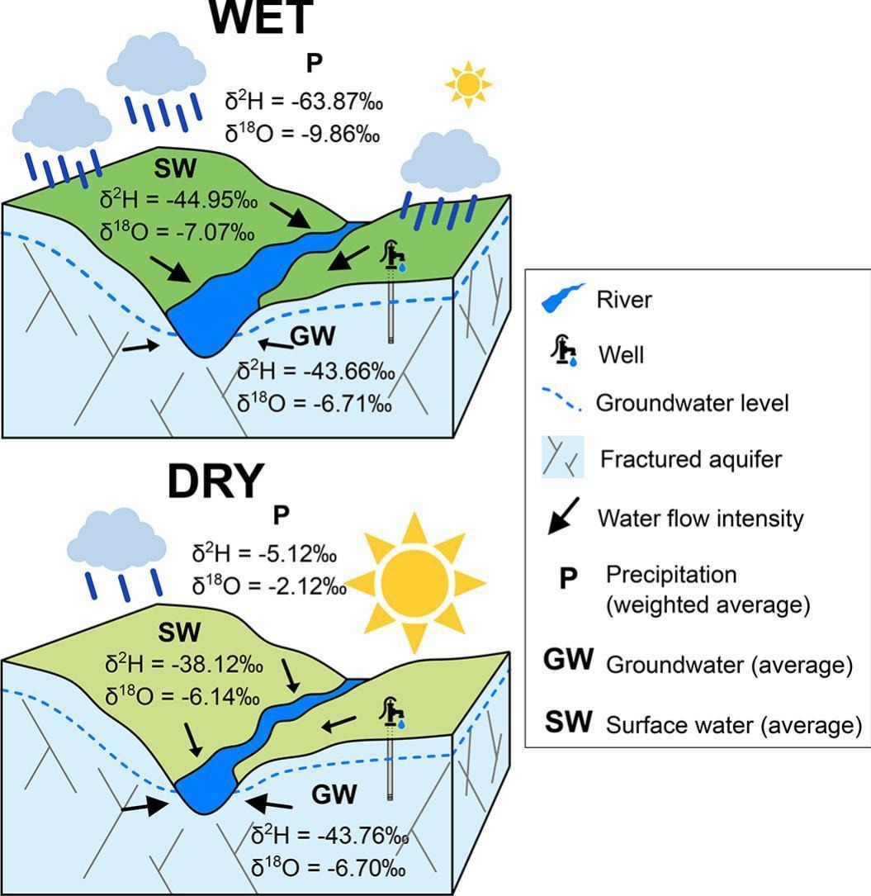

Deciphering surface water-groundwater connectivity using chemical and stable isotope tracers (H and O) in the headwaters of São Francisco River, Brazil

Resumo em Português
Este estudo avaliou a composição química de elementos maiores e isótopos estáveis (H e O) em precipitação, águas subterrâneas e águas superficiais na sub-bacia São Francisco 1 (SF1), com aproximadamente 14.000 km², localizada na região das cabeceiras do Rio São Francisco, em área de sistema aquífero fraturado com complexa estrutura geológica. Tanto as águas subterrâneas quanto as superficiais apresentaram baixo teor mineral, com condutividade elétrica média de 147,2 ± 99,4 μS.cm⁻¹ e 65,7 ± 78,7 μS.cm⁻¹, respectivamente. A abundância iônica (mEq.L⁻¹) seguiu Ca²⁺ > Na⁺ > Mg²⁺ > K⁺ para os cátions e HCO₃⁻ > SO₄²⁻ > Cl⁻ > NO₃⁻ > F⁻ > PO₄³⁻ para os ânions, com a maioria das amostras classificadas como bicarbonatos cálcicos e/ou magnesianos.A composição química foi influenciada principalmente pelas interações rocha-água e pela precipitação da estação chuvosa nas águas superficiais. A composição isotópica da precipitação apresentou padrão sazonal, com valores mais baixos na estação chuvosa (−63,87‰ para δ²H e −9,86‰ para δ¹⁸O) e mais altos na estação seca (−5,12‰ para δ²H e −2,12‰ para δ¹⁸O). As águas subterrâneas permaneceram constantes (−43,71‰ para δ²H e −6,70‰ para δ¹⁸O), enquanto as águas superficiais variaram sazonalmente. As inclinações consistentes da Linha de Evaporação (EL) das águas subterrâneas em ambas as estações sugerem que a recarga foi gradual e lenta. O teste de Mann-Whitney apontou que a conectividade água superficial-água subterrânea esteve presente em ambas as estações, embora mais intensa na estação chuvosa. Na porção inferior da SF1, distribuições idênticas (p = 1) de NO₃⁻, δ²H e δ¹⁸O evidenciam a maior conectividade e mistura nesse compartimento. As águas subterrâneas constituíram a principal fonte de escoamento fluvial, contribuindo entre 60% e 85%, sendo a precipitação da estação chuvosa uma fonte adicional para as águas superficiais.